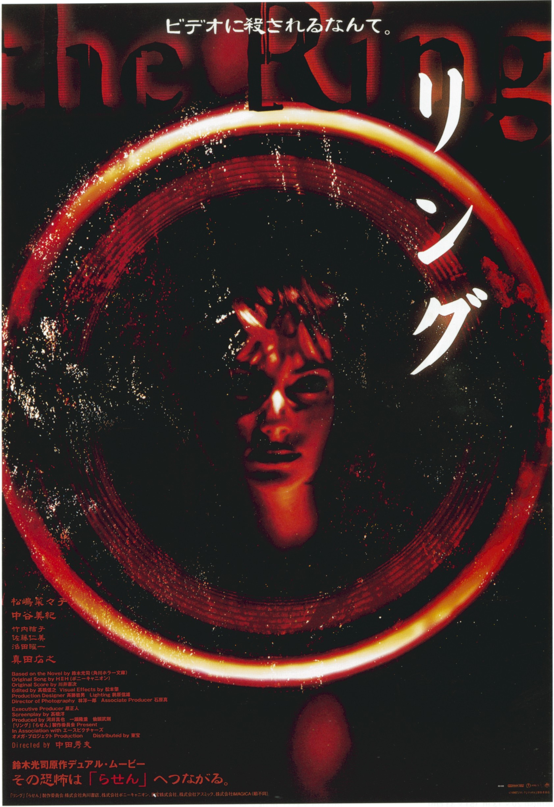

午夜凶铃（リング，1998）
内容简介：
- 女高中生友子和同学共同看了一盘来历不明的录像带，七天后，她和她的同学相继死去，这引起了女记者浅川（松岛菜菜子 饰）的关注，她决定调查这个事件的真相。
- 浅川了解到友子死前曾因看一盘录像带惊吓过度而住院，于是她找到了出租那盘录像带的旅店，也租了那盘没有名字的带子，打开录像机，极度恐怖的画面让浅川情绪几近崩溃。
- 浅川的前夫高山（真田广之 饰）此时来到了她的身边，并且复制了一盘录象带决定和她一起研究。而他们只有在七天之内揭开录像带的秘密才能活下去……
短评：
- 1.说起贞子一定会联想到午夜凶铃，很佩服铃木光司的原作小说。 ——潘半仙
- 2.至今对贞子从电视机里爬出来心有余悸！ ——yocofcjx28
可播放资源：